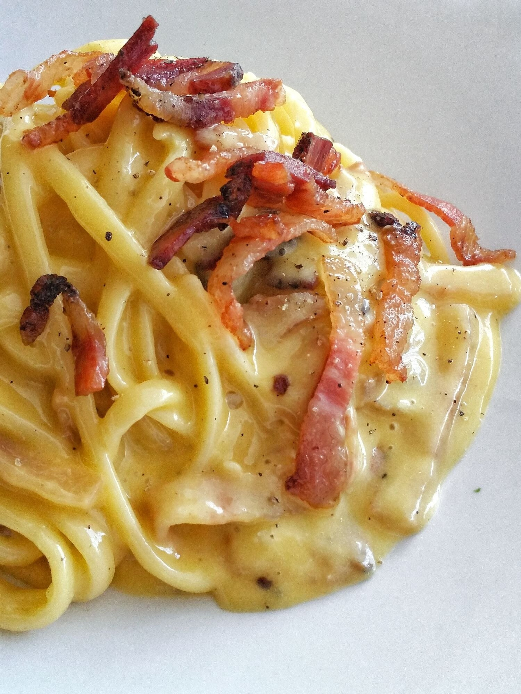

Carbonara
-

-
You have probably heard many times of this italian dish.
Today I am going to show you how to prepare the carbonara.
Ingredients
- 320g of spaghetti
- 6 Egg Yolks
- Black pepper
- 150g of guanciale
- 50g of Roman pecorino cheese
How to prepare the dish
- Boil the salty water in a hot pot.
- Cook the guanciale in a pan. Do so for
ten minutes, avoiding over-cooking:
this last sentence is important,
since it may lead to the release of bad tastes.
-
When and only when the water is boiling, put the spaghetti in it.
In the meantime pour the yolks in a container.
Add the pecorino and the black pepper.
Mix things until a smooth cream is obtained.
-
Using the right equipment remove the guanciale from the pan,
transferring it into some arbitrary container.
Leave the grease in the pan and pour a spoon of the boiling
water in it.
-
Transfer the now-ready pasta in the greased pan.
Cook with a very low flame for a few seconds.
Pour
the mixture of yolks and pecorino in the pan.
Quickly mix with pasta.
-
Add the guanciale and:
Enjoy :-)
Go back to the homepage